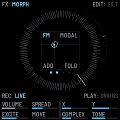

PALINDROME — SILT
Three recordings, one playable instrument. MORPH creates source audio; SILT scans, slowly moves through, layers and transforms it. REC prints the current sound into the next ring, leaving the previous recordings intact until you explicitly make room.
Play the emulator · Back to instrument · Source
Play it
- Tap a key on SILT's empty screen. MORPH supplies the first sound; RING 01 captures automatically.
- Press PLAY. The ring plays with a gentle moving read head—without recording over itself.
- Turn KNOB1 / SCAN to browse the audio, KNOB2 / GRAIN to change fragment length, and KNOB3 / FLOW to make the motion stronger or subtler.
- Press REC. The processed sound is captured into RING 02. The first recording remains accessible.
- Turn KNOB4 / WEAVE from one ring to two and eventually all three. Press REC again to print that mixture into another generation.
Two instruments, two roles
| SILT — EDIT / HOME | MORPH — FX | |
|---|---|---|
| Purpose | Playback, scan, transform and layer recorded sound | Generate the sound to inject |
| Keys | Play and latch up to four grain pitches | Strike up to four synthesis notes |
| KNOB1 | SCAN — manual position in the recording | X — sound morph position |
| KNOB2 | GRAIN — size, 20–500 ms | Y — sound morph position |
| KNOB3 | FLOW — slow playback drift | COMPLEX — harmonic richness |
| KNOB4 | WEAVE — solo → two rings → three rings | TONE — brightness |
| SELECT | RING — choose which recording you edit | RING — unchanged |
| ALGORITHM | MODE — Loop / Cloud / Pulse / Fracture | MOVE — automatic vector motion |
| PRESETS | PITCH — transpose grains | EXCITE — modal ringing |


The point of SCAN
SCAN places a read point anywhere in the selected 1.49-second recording—similar in spirit to the PO-33's simple sample-start control. The amber notch shows your SCAN position; the white notch is the moving playback head. FLOW drifts gently around that starting point, while MOTION/SPEED determines how quickly the head travels around the loop. Setting FLOW to zero removes its automatic wobble. The PCM itself is unchanged.
The grain playback concepts are closer to Mutable Instruments Beads: position, fragment size and moving or frozen reading are separate controls. PALINDROME retains the three-ring generational model rather than Beads' single continuously recorded history.
Three rings, three relationships
Each circle is an independent 16-bit mono recording, approximately 1.49 seconds long. A selected ring is bright; other rings active through WEAVE glow amber.
| WEAVE position | What you hear |
|---|---|
| 0 | SOLO — just the selected ring |
| 50 | PAIR — selected ring plus its parent (or nearest surviving ring) |
| 100 | ALL — all three recorded rings, each with its own head and grain settings |
WEAVE never multiplies the sixteen-grain budget: grain-start rates and audio levels are apportioned between active rings. Selecting a ring changes your edit focus; the other rings can continue playing.
REC is a one-way PRINT, not a live feedback cable. With WEAVE at zero, a processed ring is passed to the next recording. With WEAVE raised, you print a layered mix. The child ring starts with WEAVE at zero because the old rings are already present in its recorded sound; this prevents repeatedly doubling them. Recording effects are bounded, and CARRY mixes proportional portions of the original and processed source rather than adding two full-scale signals.
| Activity | Result |
|---|---|
| MORPH → REC | A new ring captures the synth |
| SILT solo → REC | The selected ring's manipulated audio becomes a new ring |
| SILT WEAVE → REC | The layered audio is printed once to the new ring |
| SELECT older ring | Its sound and granular settings are restored |
| RINGS / LOCK | Protect a ring from automatic replacement |
| Three rings full | Manual REC names the oldest unlocked, unselected ring it would replace; if no eligible ring exists, it refuses; automatic EVOLVE pauses |
Playback modes
| MODE | Experience |
|---|---|
| LOOP | Coherent reading with minimal scatter |
| CLOUD | Overlapping sound-cloud grains |
| PULSE | Short, separated rhythmic events |
| FRACTURE | Unstable short pieces with position, pitch and reverse jumps |
Each ring retains its own mode, scan point, flow, speed, pitch and granular parameters.
Additional controls
Press a button once to open its page; the knob labels on screen always identify their current jobs. No musical function requires holding a modifier.
| Control | ENV — SHAPE | LFO — MOTION |
|---|---|---|
| KNOB1 | SHAPE: grain envelope | SPEED: ring playhead travel |
| KNOB2 | VARY: randomized grain duration | TIMING: regular/irregular triggers |
| KNOB3 | SCATTER: octave and interval jumps | DENSITY: grains per second |
| KNOB4 | DETUNE: pitch randomness | SPRAY: position randomness |
| ALGORITHM | CLUSTER: voices per trigger | EVOLVE: optional automatic new recordings |
| PRESETS | REVERSE: chance to reverse | — |
FLOW versus EVOLVE: FLOW changes how an existing recording plays. It begins gently enabled. EVOLVE makes new recordings after you leave the instrument unattended. It begins OFF and stops when the three rings are full.
The SEL / RINGS page offers CARRY (KNOB1), LOCK (KNOB2: right locks, left unlocks), and confirmed DELETE (KNOB4, then SEL). ARP still opens MIX (MORPH/SILT balance, stereo spread, level). SEQ opens REC FX (noise, color, crush, gate, dropouts, damp) for the next generation.
PLAY toggles ongoing grains; the keys can still fire individual grains when PLAY is stopped. HOME returns to SILT without deleting audio. GLO is a one-press toggle for a full-screen button guide; press it again or HOME to exit. SAVE is explicitly unavailable.
Five short patches
| Sound | Starting move |
|---|---|
| Scanning sample | MODE CLOUD, FLOW 0, MOTION SPEED 0; sweep SCAN across the recording |
| Slowly evolving texture | MODE CLOUD, FLOW 20, GRAIN 70, MOTION SPEED 10 |
| Two-recording duet | Capture two rings, WEAVE 50, edit SCAN/SPEED on each separately |
| All three running | Make three rings, WEAVE 100, MODE varied per selected ring |
| Serial transformation | WEAVE 0, REC to print solo; change mode/pitch, REC again; keep a locked original |
Limits: Exactly three PCM rings and sixteen shared grains. Audio and ring settings are volatile (lost at power-off). Physical FM-1 playback quality and UI ergonomics still need hands-on testing. The native toolchain, host tests and browser emulator use the shared C audio engine. Version 0.9 is an experimental release.